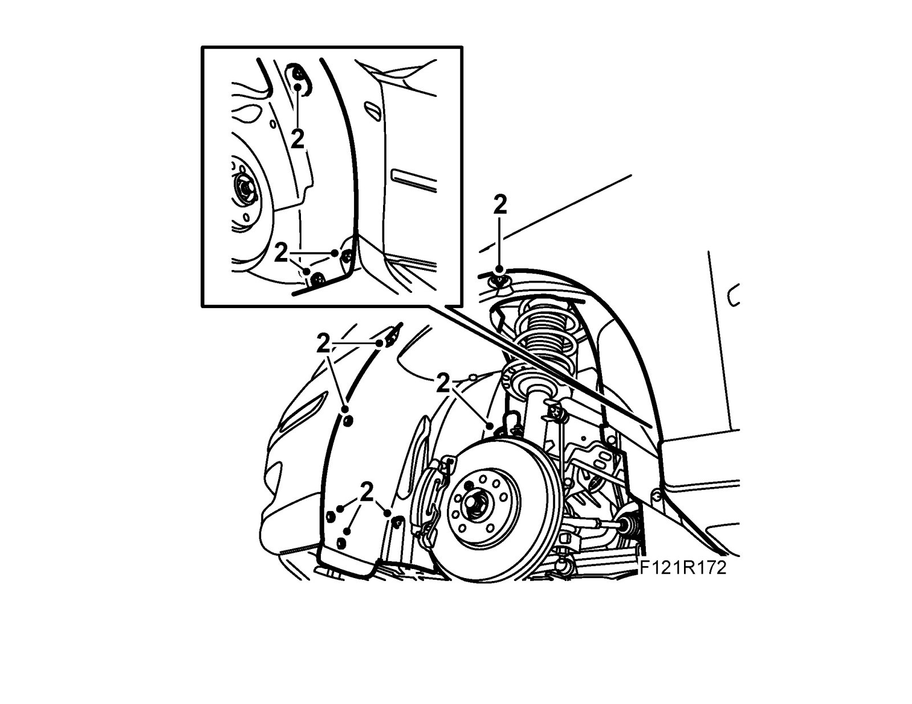
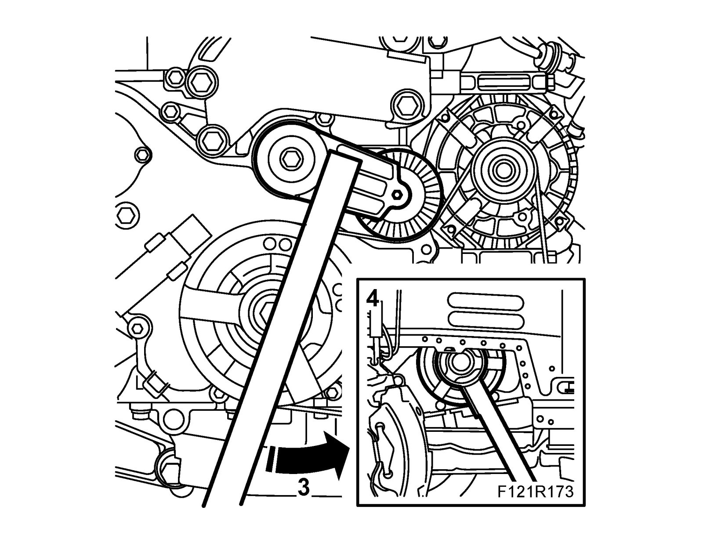
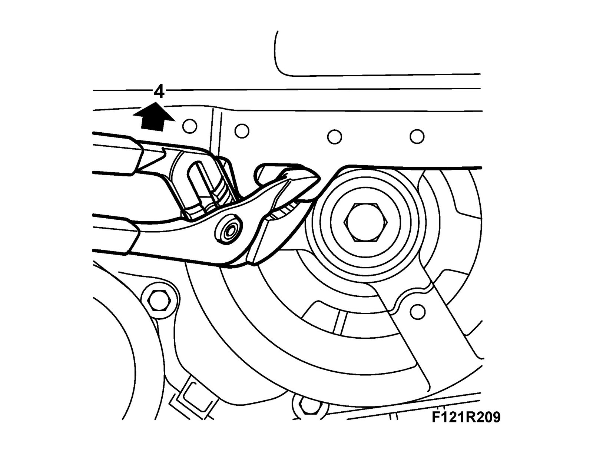
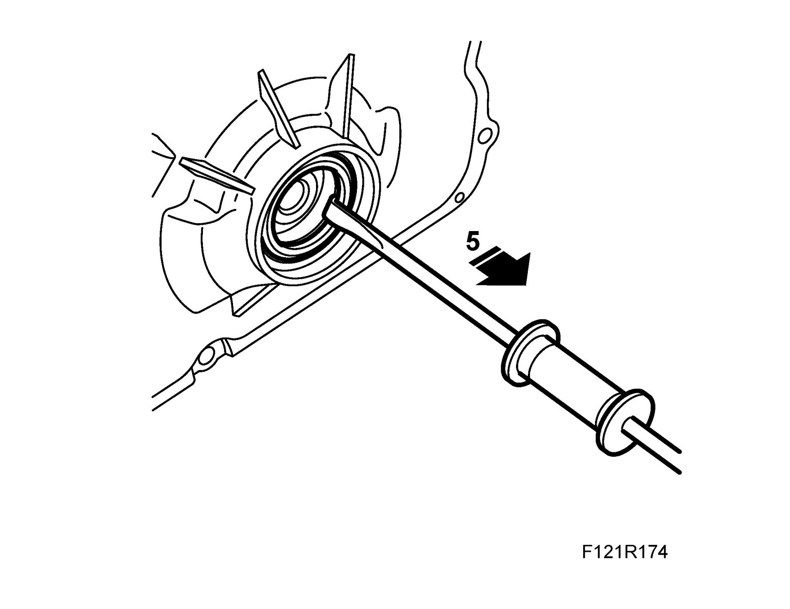
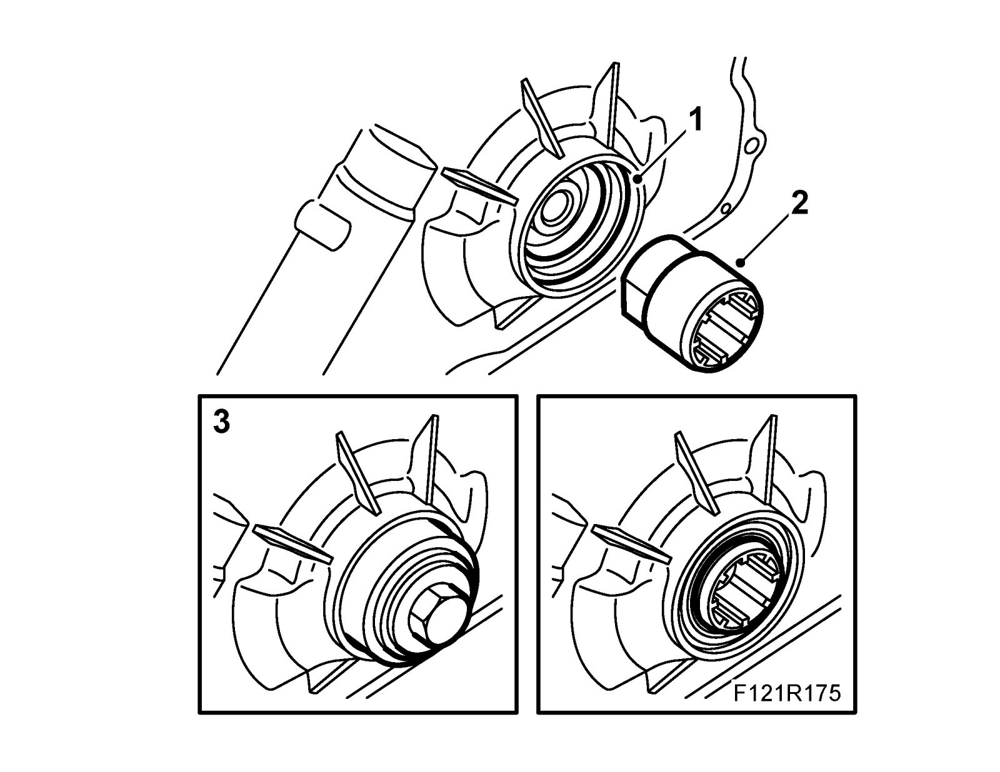
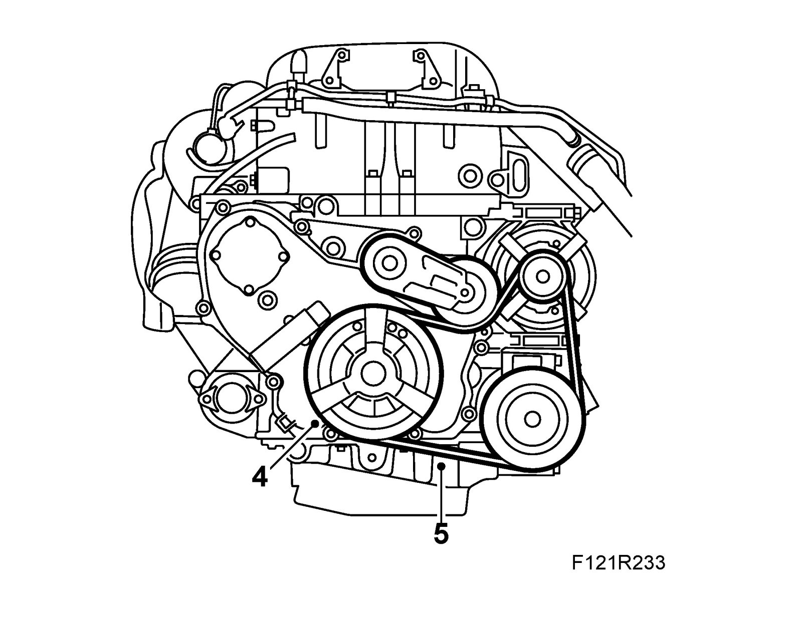
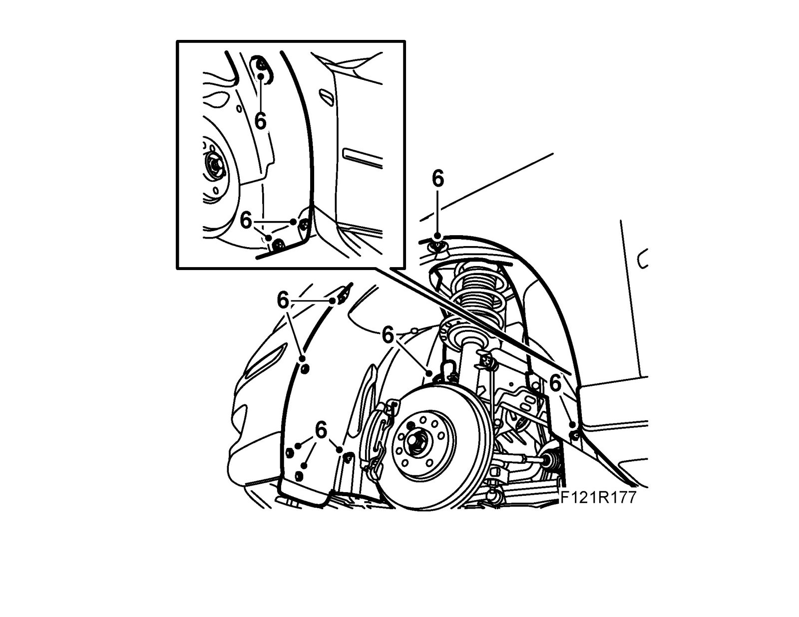

Front Crankshaft Seal: Service and Repair
Front crankshaft sealTo remove
1. Raise the car and remove the front right wheel.
2. Remove the right wing liner.

3. Mark the direction of belt rotation. Relieve the belt tensioner with 83 96 095 Relieving tool, belt circuit and remove the multigroove belt.

4. Remove the crankshaft pulley using 83 95 360 Holding tool, crankshaft pulley (shaft only) and 83 96 210 Holding tool, crankshaft pulley. Turn up the sheet metal lug and carefully hold the engine down slightly with a pry bar to gain access to the bolt.

5. Remove the gasket using a 87 91 360 Extractor

To fit
1. Clean the sealing surfaces.

2. Position the 83 96 202 Fitting tools, front crankshaft seal protective collar on the crankshaft. Lubricate the new sealing ring with non-acidic Vaseline and position it on the fitting tool.
3. Position the fitting tool on the crankshaft. Screw in the sealing ring using the crankshaft pulley bolt so that it is flush with the timing cover. Remove the tool.
4. Fit the crankshaft pulley with a new bolt. Use 83 95 360 Holding tool, crankshaft pulley (shaft only) and 83 96 210 Holding tool, crankshaft pulley. Press down the engine slightly with a pry bar in order to insert the bolt. Bend back the sheet metal lug and spray with 30 15 948 Cavity fluid in order to prevent corrosion.
Tightening torque 100 Nm + 75° (74 lbf ft + 75°)

5. Relieve the belt tensioner using 83 96 095 Relieving tool, belt circuit and fit the multigroove belt in the marked direction of rotation. Check the position of the belt on all pulleys.
6. Fit the wing liner.

7. Fit Wheel.
8. Lower the car, check the level of the engine oil and top up as necessary.